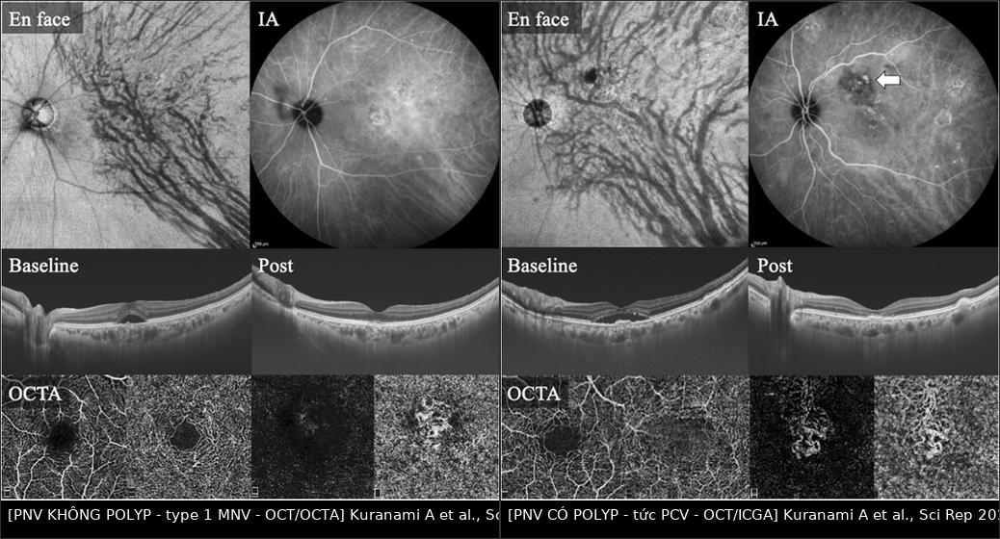
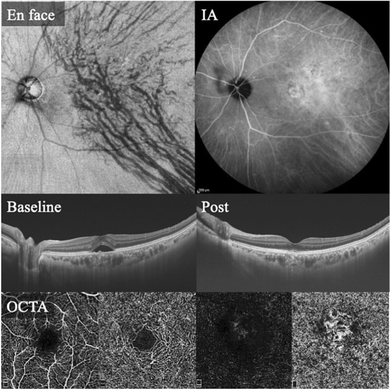
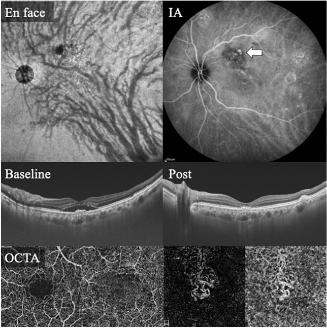
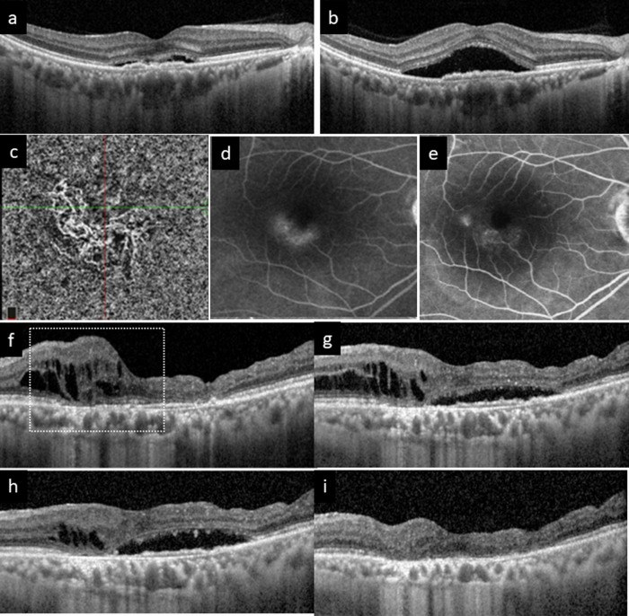

482 — Tân mạch hắc mạc sau CSCR mạn (pachychoroid neovasculopathy): OCTA, phân biệt CSCR hoạt động & chọn anti-VEGF/PDT / Pachychoroid neovasculopathy (PNV)
Tags: pattern:tan-mach-hac-mac pattern:bong-thanh-dich pattern:hac-mac-day vung:hoang-diem protocol:OCT-EDI protocol:OCTA protocol:FA-ICGA
Mức chắc chắn (certainty): tổng hợp y văn (literature synthesis) — số liệu từ toàn văn các bài mở (PMC10164122, PMC11933466); các ca trong quiz là ca nguyên văn, giữ đúng tuổi – mô tả OCT/ICGA/OCTA gốc.
Câu chốt: bệnh nhân lớn tuổi, hắc mạc dày, không có drusen, có dịch dưới võng mạc (subretinal fluid — SRF) tái diễn trên nền CSCR mạn → đừng chỉ nghĩ "CSCR đang hoạt động". Phải tìm tân mạch type 1 dưới biểu mô sắc tố (type 1 MNV) trên OCTA, vì PNV cần anti-VEGF, còn CSCR cần half-dose PDT — điều trị sai hướng = tiêm lặp vô ích hoặc bỏ mất cửa sổ PDT. Dấu chốt trên OCT: nâng RPE nông, không đều (shallow irregular RPE elevation — SIRE) = "dấu hai lớp" (double-layer sign), và dòng chảy giữa RPE và màng Bruch trên OCTA.
1. Tổng quan bệnh học – cơ chế hình ảnh
- Bệnh học (pathology). Phổ bệnh hắc mạc dày (pachychoroid disease spectrum) gồm bệnh hắc mạc dày không triệu chứng (PPE) → CSCR → PNV → bệnh mạch polyp (PCV). Nền tảng: ứ trệ dòng ra tĩnh mạch hắc mạc (củng mạc dày, tĩnh mạch xoáy thoát kém) → mạch Haller giãn (pachyvessels), choriocapillaris mỏng/giảm tưới máu phía trên → thiếu oxy → VEGF → mọc tân mạch type 1 trong khoang dưới RPE.
- TẠI SAO hình ảnh như vậy (vật lý):
- OCT: tổ chức tân mạch là mô phản xạ trung bình–cao, nằm giữa RPE và màng Bruch, đẩy RPE lên nông và gồ ghề → SIRE / dấu hai lớp. Khác drusen: drusen là vật liệu dưới RPE, bờ nhẵn, đối xứng, thường nhiều ổ hai mắt.
- OCTA (chụp mạch cắt lớp quang học): dùng tương phản chuyển động của hồng cầu giữa các lần quét → mạng mạch tăng tín hiệu trong khoang dưới RPE, không cần thuốc cản quang.
- FA (fluorescein angiography): tân mạch rò huyết tương → tăng huỳnh quang, lan tỏa thì muộn; ICGA (indocyanine green angiography) phát hiện tăng thấm mạch hắc mạc (choroidal vascular hyperpermeability — CVH) và polyp.
- Hắc mạc dày đo bằng EDI-OCT tại dưới hoàng điểm (subfoveal choroidal thickness — SCT): PNV 298 ± 96 µm so với nAMD không pachychoroid 228 ± 82 µm (P < 0,01) (PMC10164122).
- Vì sao khó chẩn đoán: PNV bị xếp nhầm thành "nAMD" rất nhiều — khi phân loại lại 100 bệnh nhân, 43% ca "nAMD" thực chất là PNV; 47,3% ca type 1/type 2 MNV và 44,7% ca PCV được xếp lại thành PNV (PMC10164122). Điều này đổi tiên lượng và cách điều trị.
- Ngưỡng định lượng cần nhớ:
- SCT tham chiếu "hắc mạc dày" ~270 µm (nghiên cứu Hàn Quốc > 300 mắt, SCT trung bình ~270 µm) — nhưng KHÔNG có ngưỡng tuyệt đối: 7/43 mắt PNV (16%) có SCT < 200 µm (PMC10164122) → hắc mạc mỏng không loại trừ PNV.
- Bất đối xứng dọc của mạch hắc mạc trung bình/lớn (vertical asymmetry): 81,4% ở PNV so với 31,6% ở nhóm không PNV (PMC10164122).
- Drusen: 0% ở PNV so với 19,3% ở nhóm không PNV (PMC10164122) — không có drusen là gợi ý, không phải tiêu chuẩn bắt buộc.
- 39,5% mắt PNV có polyp (tức đã ở dải PCV) (PMC10164122); 13,5% mắt PNV chuyển thành PCV/AT1 sau trung bình 3,4 năm (PMC11933466).
2. Mẫu hình + chẩn đoán phân biệt theo bối cảnh (Gamut)
- Mẫu hình "SRF + hắc mạc dày + không drusen": CSCR cấp → CSCR mạn → PNV → PCV; ngoài ra PPE (không có dịch), hội chứng pachychoroid quanh đĩa thị (PPS).
- Mẫu hình "SRF + drusen + tuổi cao": nAMD type 1 (drusen-driven) — tân mạch giống PNV nhưng nền bệnh khác, đáp ứng anti-VEGF kém hơn, cần phân biệt để tiên lượng.
- Mẫu hình "hắc mạc dày + SRF hai mắt + viêm": Vogt–Koyanagi–Harada (VKH), bệnh hắc mạc dày do thuốc (corticosteroid — bài 470), hội chứng Cushing, thai kỳ.
- Mẫu hình "khối hắc mạc đỏ cam": u máu hắc mạc (choroidal hemangioma) — dày hắc mạc khu trú, ICGA "washout", không có mạng tân mạch.
- Mnemonic "THICK": Thiếu drusen · Haller giãn (pachyvessels) · Irregular RPE elevation (SIRE) · Choroid dày > 270 µm · Không đáp ứng kéo dài với anti-VEGF đơn thuần.
3. Bảng so sánh phân biệt (ma trận đối chiếu)
| Thực thể (entity) | Hình ảnh điển hình (OCT/OCTA/FA-ICGA) | Chốt vào (rule-in) | Chốt loại (rule-out) | Gợi ý xác nhận |
|---|---|---|---|---|
| CSCR hoạt động | SRF vòm, RPE phẳng hoặc điểm rò nhỏ, hắc mạc dày, không có mạng mạch dưới RPE | FA: điểm rò + lan tỏa; OCTA KHÔNG có mạng tân mạch | Mạng mạch rõ trên OCTA → PNV | FA/ICGA; theo dõi 4–8 tuần |
| PNV (type 1 MNV) | SIRE/dấu hai lớp, hắc mạc dày, OCTA có mạng mạch dưới RPE, không drusen | SIRE + dòng chảy dưới RPE trên OCTA + không drusen | Drusen nhiều + hắc mạc mỏng → nAMD | OCTA 3×3/6×6 + ICGA |
| PCV (PNV có polyp) | PED dạng vòm nhọn (sharp-peaked), polyp trên ICGA, xuất huyết/tơ huyết dưới võng mạc | Polyp trên ICGA + PED vòm nhọn | Không polyp, mạng mạch phẳng → PNV | ICGA (chuẩn vàng cho polyp) |
| nAMD type 1 (drusen-driven) | Drusen, hắc mạc không dày, MNV dưới RPE | Drusen hai mắt + tuổi > 70 + SCT bình thường/mỏng | SCT > 270 µm + SIRE + không drusen → PNV | OCTA + ICGA; tiền sử |
| PPE (pachychoroid pigment epitheliopathy) | RPE biến đổi không có SRF, hắc mạc dày, pachyvessels | Không dịch, không mạng mạch | Có SRF/MNV → CSCR/PNV | OCT EDI; theo dõi |
| U máu hắc mạc | Dày hắc mạc khu trú, tăng huỳnh quang sớm + washout trên ICGA, không MNV | Khối đỏ cam + ICGA washout | Có mạng tân mạch → PNV | ICGA, siêu âm B |
| VKH | SRF hai mắt + hắc mạc dày lan tỏa + viêm dịch kính, disc hyperemia | Song phương + viêm + tiền sử da/tóc | Một mắt, không viêm → CSCR/PNV | FA/ICGA, lâm sàng toàn thân |

Trái: PNV không polyp — en face OCT thấy bất đối xứng mạch hắc mạc; ICGA không polyp; OCT có SRF trên SIRE; OCTA có mạng tân mạch. Phải: PNV có polyp (PCV) — polyp ở đỉnh mạng mạch trên ICGA (mũi tên), OCTA vẫn thấy MNV. Cùng một bộ máy, cùng cách đọc → khác nhau ở polyp. Nguồn: Kuranami A et al., Sci Rep 2023 (PMC10164122), Fig. 2–3, CC BY 4.0. Ảnh ghép letterbox, giữ nguyên tỷ lệ.Ba dấu hiệu chốt cần đọc đúng
- SIRE/dấu hai lớp: dải phản xạ thứ hai dưới RPE, nâng RPE nông và không đều (không tạo vòm căng như PED); nếu bờ nhẵn, đối xứng, hai mắt → nghĩ drusen.
- OCTA dương tính: mạng mạch nằm giữa RPE và Bruch (segmentation "sub-RPE"), có dòng chảy rõ, không phải chấm nhiễu.
- ICGA: CVH lan tỏa + polyp (nếu có) — quyết định thêm PDT.
4. Protocol chụp + thuật toán điều trị
4.1. Bộ ảnh tối thiểu (mỗi lần khám)
- OCT hoàng điểm EDI, raster 6 × 6 mm (hoặc 30°): đo SCT, tìm SIRE, định lượng SRF (µm), dịch trong võng mạc (IRF), PED, màng trước võng mạc.
- OCTA 3 × 3 mm (và 6 × 6 mm) với segmentation dưới RPE: xác nhận MNV, đo diện tích mạng mạch, phát hiện polyp nghi ngờ.
- FA + ICGA ở lần đầu (và khi nghi polyp/tái phát): FA cho rò rỉ, ICGA cho CVH và polyp — ICGA là chuẩn vàng cho polyp, không thay bằng OCTA.
- AF (autofluorescence) đánh giá tổn thương RPE mạn; siêu âm B nếu nghi u máu hắc mạc.
- Trước điều trị: huyết áp, tiền sử corticosteroid (bài 470), thai kỳ, chống chỉ định verteporfin (porphyria, suy gan nặng), chức năng gan/thận.
4.2. Điều trị
- PNV không polyp → anti-VEGF là trục: chọn aflibercept khi cần giảm dịch mạnh (giảm CVH và bề dày hắc mạc tốt hơn ranibizumab trong dữ liệu review) (PMC11933466); phác đồ treat-and-extend.
- Dữ liệu 2 năm (22 mắt PNV so với 22 mắt không PNV): khô hoàng điểm sau nạp 90,9% vs 59,1%; 11,0 ± 2,9 vs 13,4 ± 3,2 mũi tiêm; khoảng cách 12,1 ± 2,9 vs 8,4 ± 3,1 tuần (PMC10164122) → PNV cần ít mũi hơn nhưng vẫn cần theo dõi dài.
- SCT giảm sau điều trị: 296 ± 89 µm → 230 ± 74 µm (1 năm) → 216 ± 71 µm (2 năm) (PMC10164122) — giảm hắc mạc là dấu hiệu đáp ứng, không phải mục tiêu điều trị.
- PNV có polyp (PCV) → anti-VEGF + PDT phối hợp: PDT nhắm polyp/CVH, anti-VEGF nhắm dịch; phối hợp ban đầu giúp giảm số mũi duy trì (PMC11933466).
- PNV kháng trị (dịch dai dẳng dù anti-VEGF) → "rescue PDT": half-dose hoặc half-fluence PDT; đây là lựa chọn được khuyến nghị trong review khi đơn trị anti-VEGF thất bại (PMC11933466).
- CSCR thuần (không MNV) → half-dose/half-fluence PDT là điều trị chuẩn cho thể mạn có triệu chứng (PLACE, SPECTRA); eplerenone KHÔNG có hiệu quả trong RCT (VICI, SPECTRA) (PMC11933466).
- Theo dõi: OCT mỗi 4 tuần trong giai đoạn nạp, sau đó theo treat-and-extend (4 → 8 → 12 tuần); OCTA lặp khi nghi tái phát hoặc khi dịch không giải thích được; ICGA lặp nếu xuất huyết mới (nghi polyp).
- Ngừng/giảm liều: chỉ khi khô hoàng điểm ≥ 3 lần khám liên tiếp và không có hoạt tính trên OCTA — không ngừng theo cảm nhận "bệnh nhân thấy tốt hơn".
flowchart TD
A[SRF tái diễn trên nền hắc mạc dày] --> B[OCT EDI và OCTA dưới RPE]
B --> C{Có mạng tân mạch dưới RPE}
C -->|Không| D[CSCR hoạt động hoặc PPE]
D --> D1[Half-dose PDT nếu mạn có triệu chứng]
C -->|Có| E{ICGA có polyp}
E -->|Không| F[PNV không polyp]
F --> F1[Anti-VEGF treat-and-extend]
E -->|Có| G[PCV]
G --> G1[Anti-VEGF phối hợp PDT]
F1 --> H{Dịch dai dẳng sau nạp}
H -->|Có| H1[Rescue half-dose PDT]
H -->|Không| H2[Giãn khoảng cách tới 12 tuần]
G1 --> I[Theo dõi OCT mỗi 4 đến 8 tuần]
H1 --> I
H2 --> I
5. Biến thể bình thường và cạm bẫy
- Hắc mạc dày không bệnh lý: nhiều mắt SCT > 300 µm hoàn toàn bình thường — chỉ chẩn đoán PNV khi có MNV, không điều trị "hắc mạc dày" đơn thuần.
- Hắc mạc mỏng không loại trừ PNV: 16% mắt PNV có SCT < 200 µm (PMC10164122); đừng vì SCT 180 µm mà kết luận nAMD.
- OCTA giả "tân mạch": artifact do projection từ mạch hắc mạc lớn hoặc do segmentation sai → luôn đối chiếu B-scan và hai lần chụp; nếu không chắc, dùng ICGA.
- Dấu hai lớp có thể không hoạt động (non-exudative MNV): thấy mạng mạch nhưng không dịch → theo dõi, không tiêm.
- CSCR mạn có SRF dai dẳng ≠ PNV: điều trị anti-VEGF khi không có MNV không giúp và làm mất thời gian; ngược lại, coi PNV là "CSCR tái phát" và chỉ theo dõi → mất thị lực do thoái hóa võng mạc ngoài.
- Corticosteroid là yếu tố khởi phát mạnh: bệnh nhân dùng steroid uống/tiêm ngoài nhãn cầu/hít liều cao — hỏi kỹ và ngừng nếu có thể (bài 470).
- Thai kỳ: CSCR thường nặng lên; hạn chế thuốc, ưu tiên theo dõi; PDT và anti-VEGF cần hội chẩn sản – mắt.
- Xuất huyết dưới võng mạc ồ ạt sau tiêm ở PCV (biến chứng hiếm nhưng nặng) — cần nhận biết và xử trí cấp (bài 445).
- Đừng bỏ sót nguyên nhân khác của SRF: viêm màng bồ đào, u hắc mạch, bong võng mạc thần kinh cảm giác do tăng huyết áp — OCTA âm tính không đồng nghĩa "chỉ là CSCR".
6. Tự lượng giác — Blind Quiz
Ca 1 — Nữ 70 tuổi, nhìn mờ mắt phải vài tuần, không đau, không tiền sử bệnh mắt.

- Gợi ý: hắc mạc dày; không thấy drusen; bờ RPE gồ lên không đều; mắt còn lại bình thường.
- Câu hỏi: (1) Mô tả tổn thương trên OCT và OCTA? (2) CSCR hay PNV? (3) Vì sao câu trả lời đổi cách điều trị?
Bấm để hiện đáp án (findings + chẩn đoán)
- Findings: en face OCT: bất đối xứng dọc của mạch hắc mạc, mạch Haller giãn quanh hoàng điểm (pachyvessels). ICGA: không có polyp, có tăng thấm. OCT baseline: SRF trên một vùng RPE nâng nông, không đều = SIRE, SCT 317 µm; OCT post: dịch giảm, RPE còn gồ. OCTA: mạng mạch tăng tín hiệu dưới RPE tại hoàng điểm = type 1 MNV.
- Chẩn đoán: pachychoroid neovasculopathy (PNV) — tân mạch type 1 trên nền hắc mạc dày, không drusen.
- CSCR hay PNV: CSCR hoạt động không có mạng tân mạch; ở đây OCTA thấy MNV → PNV. Đây là ca được xếp lại từ "type 1 MNV/nAMD" sang PNV.
- Vì sao đổi điều trị: PNV đáp ứng anti-VEGF tốt hơn, ít mũi hơn và giãn được khoảng cách; nếu coi là CSCR mạn thì sẽ chọn half-dose PDT, còn nếu coi là nAMD thì tiên lượng sai và có thể tiêm quá nhiều.
- Nguồn ảnh: Kuranami A et al., Sci Rep 2023 (PMC10164122), Fig. 3, CC BY 4.0. Ca nguyên văn: nữ 70 tuổi, SCT 317 µm.
Ca 2 — Cùng bộ ảnh ở bệnh nhân nam 81 tuổi, thị lực giảm, có polyp trên ICGA.

- Gợi ý: SCT 385 µm; OCT có PED; cần ICGA để tìm polyp.
- Câu hỏi: (1) Dấu hiệu phân biệt với ca 1? (2) Chẩn đoán và điều trị khác ca 1 thế nào? (3) Nguy cơ cần cảnh báo?
Bấm để hiện đáp án (findings + chẩn đoán)
- Findings: en face OCT: mạch hắc mạc giãn, bất đối xứng dọc; ICGA: mạng mạch + polyp ở đỉnh (mũi tên); OCT: SRF + RPE nâng, SCT 385 µm; OCTA: mạng MNV (polyp có thể không thấy rõ dòng chảy).
- Chẩn đoán: PNV có polyp = PCV trên nền pachychoroid.
- Khác ca 1: có polyp → cần phối hợp anti-VEGF + PDT (PDT nhắm polyp/CVH), không chỉ anti-VEGF.
- Nguy cơ: polyp dễ gây xuất huyết dưới võng mạc/tơ huyết và PED vòm nhọn; cần theo dõi sát và cảnh báo bệnh nhân dấu hiệu bùng phát.
- Nguồn ảnh: Kuranami A et al., Sci Rep 2023 (PMC10164122), Fig. 2, CC BY 4.0. Ca nguyên văn: nam 81 tuổi, SCT 385 µm.
Ca 3 — Bệnh nhân CSCR mạn, dịch tăng dần sau 1 năm; OCT thấy SIRE, OCTA có mạng mạch, FA rò rỉ tăng.

- Gợi ý: trước đó được chẩn đoán CSCR; dịch dưới võng mạc tăng lên dù đã theo dõi; xuất hiện cyst trong võng mạc ở giai đoạn sau.
- Câu hỏi: (1) Vì sao nghĩ đã "chuyển" sang PNV? (2) Vai trò của OCTA và FA? (3) Kế hoạch điều trị và theo dõi?
Bấm để hiện đáp án (findings + chẩn đoán)
- Findings: (a) OCT ban đầu: SRF trên SIRE, hắc mạc dày, pachyvessels. (b) OCT sau: SRF nặng hơn, có nang trong võng mạc. (c) OCTA: dòng chảy tân mạch. (d–e) FA lúc đầu và sau 1 năm: rò rỉ tăng, lan rộng.
- Chẩn đoán: PNV hình thành trên nền CSCR mạn (CSCR → PNV là một continuum, không phải hai bệnh tách rời).
- Vai trò từng kỹ thuật: OCT phát hiện SIRE/dịch; OCTA xác nhận MNV; FA cho thấy mức rò rỉ và theo dõi đáp ứng; ICGA cần khi nghi polyp/CVH.
- Điều trị: anti-VEGF (aflibercept) theo treat-and-extend; nếu dịch dai dẳng → rescue half-dose PDT; nếu có polyp → phối hợp PDT ngay.
- Theo dõi: OCT mỗi 4 tuần trong giai đoạn nạp, sau đó giãn cách; đo lại SCT (giảm là dấu hiệu đáp ứng), kiểm tra nhãn áp và thị lực mỗi lần.
- Nguồn ảnh: Cheung CMG et al., Eye 2025 (PMC11933466), Fig. 3a–e, CC BY 4.0.
Bài liên quan chéo
- 470 – CSCR do corticosteroid & tiếp cận mất thị lực không đau (khởi phát do thuốc, OCT/FA)
- 441 – OCT hoàng điểm: đọc lớp & dấu hiệu (SIRE, PED, SRF)
- 445 – Bong võng mạc (phân biệt bong thanh dịch và bong do rách)
- 444 – Tắc mạch võng mạc (mờ mắt đột ngột không đau)
- 484 – Nhiễm độc võng mạc do hydroxychloroquine (bệnh hắc mạc–võng mạc do thuốc)
- 405 – Hội chứng pachychoroid quanh đĩa thị (PPS) (dịch quanh đĩa, phù đĩa thị giả, ngưỡng hắc mạc 300 µm)
- 400 – Tổng quan Mắt & thị giác
Không dùng để chẩn đoán độc lập khi chưa có người hướng dẫn.